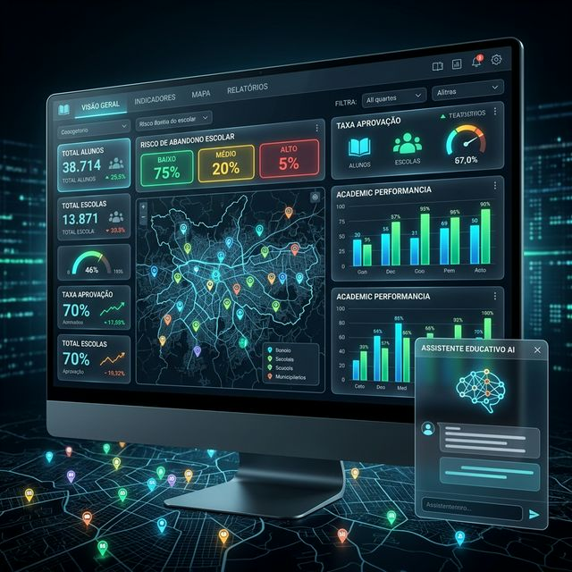
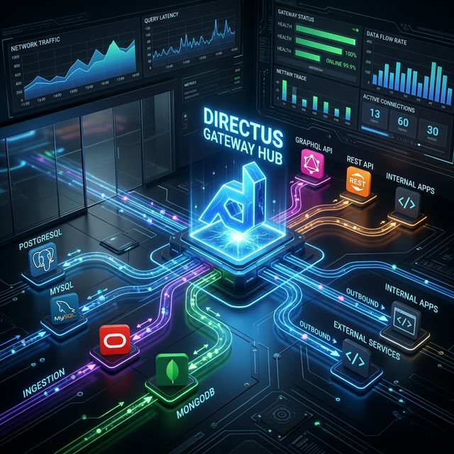
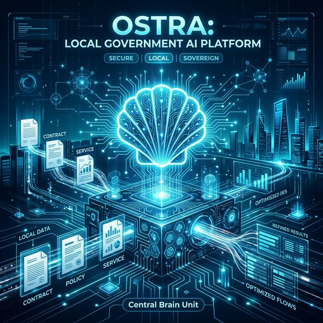

Rilen T. L.
Data Architect
Data Engineering · Lakehouse · AI/LLM · Security & GRC
25+ anos em TI · Tecnólogo em Ciência de Dados · MBA Segurança da Informação · Pós em
Arquitetura e Estratégia de Dados (em curso)
PcD — Implante Coclear · Deep Work Nativo · Acessibilidade Digital

Lakehouse.
Governança.
IA Segura.
Arquiteto de dados focado em Lakehouse Medallion (Delta Lake, Unity Catalog, Databricks), governança centralizada e IA soberana com conformidade LGPD. Como PcD com implante coclear, o Deep Work nativo é meu diferencial de precisão.
Eixos de Atuação
Projetos
Soluções por capacidade técnica — Data Architecture, AI/LLM e Security & GRC, da arquitetura ao deploy.

🎓 Data Governance & AnalyticsIntegração de sistemas legados, previsão com Random Forest e assistente de dados em linguagem natural (Python · Pandas · LangChain).
 🧱 Medallion Lakehouse Architecture
🧱 Medallion Lakehouse Architecture
Ingestão com arquitetura Medallion, qualidade de dados e governança via Unity Catalog (PySpark · Delta Lake).

🚀 Polyglot Data GatewayCamada unificada de acesso a múltiplos bancos via Headless CMS (Directus) com observabilidade (Prometheus · Grafana).

🦪 Sovereign RAG & Document IntelligencePipeline RAG local para documentos com automação de fluxo e processamento on-device (Ollama · FlowiseAI · n8n).
 🤖 LLM Orchestration & Edge AI
🤖 LLM Orchestration & Edge AI
Orquestração de LLM em Cloudflare Workers com gestão de secrets, CORS hardening e rate limiting.
Transcrição e separação de vozes com IA local (Whisper · Pyannote).
Ingestão de alta performance (Polars) e forecasting (Prophet) para governança e auditoria de dados públicos.
 🏙️ RBAC & GRC Architecture
🏙️ RBAC & GRC Architecture
Controle de acesso granular (RBAC) e auditoria administrativa em plataforma de gestão (Firebase Auth).
 🌊 Geospatial Intelligence & Time-Series Analytics
🌊 Geospatial Intelligence & Time-Series Analytics
Monitoramento territorial preditivo com dados meteorológicos reais (D3.js · React · Firebase).
 🌱 IoT Telemetry & Predictive Analytics
🌱 IoT Telemetry & Predictive Analytics
Telemetria MQTT e modelos preditivos de umidade de solo (Python · scikit-learn).
 📊 Client-Side Data Visualization & ETL
📊 Client-Side Data Visualization & ETL
Parsing e dashboards dinâmicos 100% client-side a partir de planilhas (Vanilla JS).
 Muito mais do que se possa imaginar...
Muito mais do que se possa imaginar...
Exploração contínua em Data Science, IA e Infra Estrutura.
Ver Todos os RepositóriosSelected Technical Work
Arquiteturas demonstradas em Data Engineering, AI/LLM e Security & GRC. Repositórios de trabalho disponíveis mediante solicitação.
Ver Repositórios Públicos- Lakehouse Medallion — ingestão, qualidade de dados e governança (Delta Lake · Unity Catalog · PySpark)
- RAG local — document intelligence com processamento on-device (Ollama · FlowiseAI · n8n)
- ETL & Analytics — ingestão de alta performance e forecasting (Polars · Pandas · Prophet)
- Polyglot Data Gateway — acesso unificado a PostgreSQL/MySQL com observabilidade (Directus · Prometheus · Grafana)
- RBAC & GRC — controle de acesso granular e auditoria administrativa (Firebase Auth)
- Edge AI — orquestração de LLM com gestão de secrets e rate limiting (Cloudflare Workers · Gemini)
Stack & Ferramentas
Da arquitetura para o desenvolvimento, passando pela ingestão de dados, até ao deploy em produção.
| Camada | Tecnologias |
|---|---|
| Lakehouse & Governança |
|
| IA & Data Science |
|
| Full Stack & Dev |
|
| Banco de Dados |
|
| Infra / Ops / Monitor |
|
| Visualização & Dados |
|
Vamos Conversar
Aplicada de forma ética e segura, com foco em Lakehouse, Governança e IA responsável. Aberto a projetos no setor público ou privado.
Trabalho técnico contínuo em Data Architecture, AI/LLM e Security & GRC — da arquitetura ao deploy.